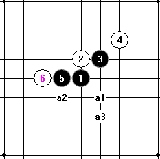

花月一个简单型的分析
#1 花月一个简单型的分析 作者：岑小鱼 发表时间：2011-7-3 12:03:46

上图是花月一型里白方追求八卦的一个弱 6 变化 .
1 ．黑 7-a1 刚好占据对方的八卦点 . 同时自身形成 2 个二 . 而这两个二又分别可以立刻连接
出新的东西 . 效率非常高 . 对比三个必胜点可以知道 a1 确实是最高效率的 .
2 ．黑 7-a2 形成一个眠三一个二 . 通云雨里面的必胜变化 . 其中的二可以立刻取得新的连接 .
如果白方取八卦点下防这个二
#2 Re:花月一个简单型的分析 作者：陨落之城 发表时间：2011-7-3 13:07:24
不错，学习了。［ 岑小鱼 于 2011-7-3 13:08:59 时花20金币送鲜花一朵］
#3 Re:花月一个简单型的分析 作者：死劲哭 发表时间：2011-7-3 17:22:14
谢谢分享！努力学习！
#4 Re:花月一个简单型的分析 作者：小元 发表时间：2011-8-7 20:24:17
这个思路分析蛮好#5 Re:花月一个简单型的分析 作者：裁决殿雪月 发表时间：2011-8-7 20:27:06
嗯，思路相当的好#6 Re:花月一个简单型的分析 作者：侯军学棋 发表时间：2011-8-24 19:26:16
=======上图对应的爱五子棋谱代码如下，以便你拆解：========
h8h9i9j10g8f8i6h10k8i10g10g9i11j7
======================================================鱼哥这个14如何杀？
#7 Re:花月一个简单型的分析 作者：连心 发表时间：2011-8-24 19:30:20
学习
#8 Re:Re:花月一个简单型的分析 作者：岑小鱼 发表时间：2011-8-27 13:58:34
=======上图对应的爱五子棋谱代码如下，以便你拆解：========
h8h9i9j10g8f8i6h10k8i10g10g9i11j7k6j6j8i8k7k5k9k10l10
======================================================
=======上图对应的爱五子棋谱代码如下，以便你拆解：========
h8h9i9j10g8f8i6h10k8i10g10g9i11j7k6k7j5h7l7m8j6l6i7
======================================================